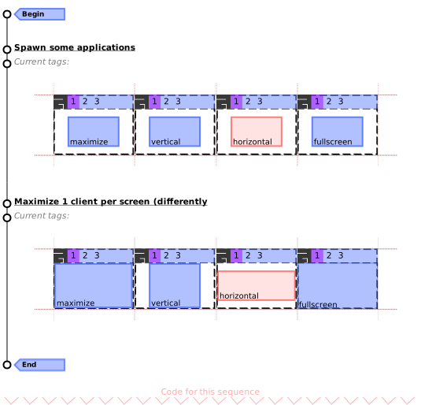
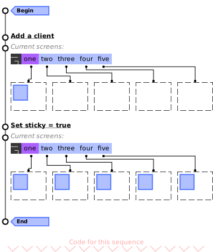
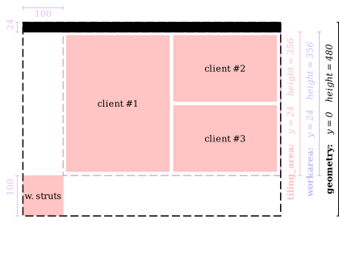
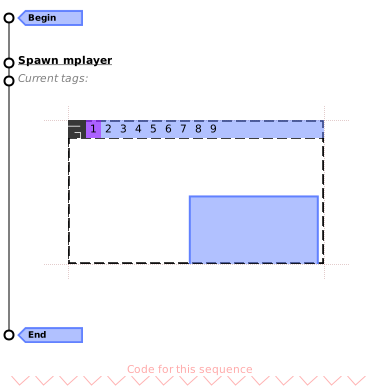
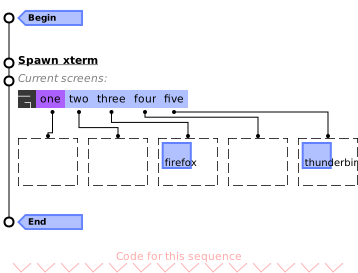
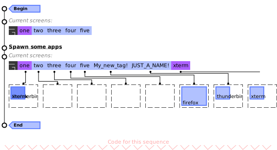

Module: client
A process window.
Clients are the name used by Awesome (and X11) to refer to a window.
A program can have multiple clients (e.g. for dialogs) or none at all (e.g.
command line applications).
Clients are usually grouped by classes.
A class is the name used by X11 to help the window manager distinguish
between windows and write rules for them. A client’s behavior is also
defined by its type and size_hints properties.
See the xprop command line application to query properties for a client.
The client’s :geometry() function returns a table with x, y, width
and height. The area returned excludes the border width.
All clients also have a shape_bounding and shape_clip used to “crop” the
client’s content.
Finally, each clients can have titlebars (see awful.titlebar).
Additionally to the classes described here, one can also use signals as described in signals and X properties as described in xproperties.
Some signal names are starting with a dot. These dots are artefacts from the documentation generation, you get the real signal name by removing the starting dot.
Accessing client objects can be done in multiple ways depending on the context. To get the currently focused client:
local c = client.focus if c then -- do something end
To get a list of all clients, use client:get:
for _, c in ipairs(client.get()) do -- do something end
To execute a callback when a new client is added, use the manage signal:
client.connect_signal("request::manage", function(c) -- do something end)
To be notified when a property of a client changed:
client.connect_signal("property::name", function(c) -- do something end)
To be notified when a property of a specific client c changed:
c:connect_signal("property::name", function() -- do something end)
To get all the clients for a screen use either screen.clients or screen.tiled_clients.

Core components relationship
|
|
|||||||||||||||||||||||||||||||||||||||
| Legend: c: a client object, t: a tag object, s: a screen object, k: an awful.key object, b: a awful.button object, n: a naughty.notification object | ||||||||||||||||||||||||||||||||||||||||


Info:
- Copyright: 2008-2009 Julien Danjou
- Author: Julien Danjou <julien@danjou.info>
Static module functions
| client.instances () -> integer | Get the number of instances. | |
| client.get ([screen[, stacked]]) -> table | Get all clients into a table. | |
| client.disconnect_signal (name, func) | Disconnect from a signal. | |
| client.emit_signal (name, ...) | Emit a signal. | |
| client.connect_signal (name, func) | Connect to a signal. | |
| awful.client.next (i[, sel[, stacked=false]]) -> client or nil | Get a client by its relative index to another client. | |
| awful.client.swap.bydirection (dir[, c=focused[, stacked=false]]) | Swap a client with another client in the given direction. | |
| awful.client.swap.global_bydirection (dir[, sel]) | Swap a client with another client in the given direction. | |
| awful.client.swap.byidx (i[, c]) | Swap a client by its relative index. | |
| awful.client.cycle (clockwise[, s[, stacked=false]]) | Cycle through the clients to change the focus. | |
| awful.client.restore (s) -> client | Restore (=unminimize) a random client. | |
| awful.client.property.persist (prop, kind) | Set a client property to be persistent across restarts (via X properties). | |
| awful.client.iterate (filter, start, s) | Returns an iterator to cycle through clients. | |
| awful.client.focus.history.disable_tracking () -> int | Disable history tracking. | |
| awful.client.focus.history.enable_tracking () -> boolean | Enable history tracking. | |
| awful.client.focus.history.is_enabled () -> (bool, int) | Is history tracking enabled? | |
Object properties
| window | integer | The X window id. | |
| name | string | The client title. | |
| skip_taskbar | boolean | True if the client does not want to be in taskbar. | |
| type | string | The window type. | |
| class | string | The client class. | |
| instance | string | The client instance. | |
| pid | integer | The client PID, if available. | |
| role | string | The window role, if available. | |
| machine | string | The machine client is running on. | |
| icon_name | string | The client name when iconified. | |
| icon | surface | The client icon as a surface. | |
| icon_sizes | table | The available sizes of client icons. | |
| screen | screen | Client screen. | |
| hidden | boolean | Define if the client must be hidden, i.e. | |
| minimized | boolean | Define it the client must be iconify, i.e. | |
| size_hints_honor | boolean | Honor size hints, e.g. | |
| border_width | integer | The client border width. | |
| border_color | color | The client border color. | |
| urgent | boolean | The client urgent state. | |
| content | surface | A cairo surface for the client window content. | |
| opacity | number | The client opacity. | |
| ontop | boolean | The client is on top of every other windows. | |
| above | boolean | The client is above normal windows. | |
| below | boolean | The client is below normal windows. | |
| fullscreen | boolean | The client is fullscreen or not. | |
| maximized | boolean | The client is maximized (horizontally and vertically) or not. | |
| maximized_horizontal | boolean | The client is maximized horizontally or not. | |
| maximized_vertical | boolean | The client is maximized vertically or not. | |
| transient_for | client | The client the window is transient for. | |
| group_window | integer | Window identification unique to a group of windows. | |
| leader_window | number | Identification unique to windows spawned by the same command. | |
| size_hints | table or nil | A table with size hints of the client. | |
| motif_wm_hints | table | The motif WM hints of the client. | |
| sticky | boolean | Set the client sticky, i.e. | |
| modal | boolean | Indicate if the client is modal. | |
| focusable | boolean | True if the client can receive the input focus. | |
| shape_bounding | surface | The client’s bounding shape as set by awesome as a (native) cairo surface. | |
| shape_clip | surface | The client’s clip shape as set by awesome as a (native) cairo surface. | |
| shape_input | surface | The client’s input shape as set by awesome as a (native) cairo surface. | |
| client_shape_bounding | surface | The client’s bounding shape as set by the program as a (native) cairo surface. | |
| client_shape_clip | surface | The client’s clip shape as set by the program as a (native) cairo surface. | |
| startup_id | string | The FreeDesktop StartId. | |
| valid | boolean | If the client that this object refers to is still managed by awesome. | |
| first_tag | tag | The first tag of the client. | |
| buttons | table | Get or set mouse buttons bindings for a client. | |
| keys | table | Get or set keys bindings for a client. | |
| marked | boolean | If a client is marked or not. | |
| is_fixed | boolean | Return if a client has a fixed size or not. | |
| immobilized_horizontal | boolean | Is the client immobilized horizontally? | |
| immobilized_vertical | boolean | Is the client immobilized vertically? | |
| floating | boolean | The client floating state. | |
| x | integer | The x coordinates. | |
| y | integer | The y coordinates. | |
| width | integer | The width of the client. | |
| height | integer | The height of the client. | |
| dockable | boolean | If the client is dockable. | |
| requests_no_titlebar | boolean | If the client requests not to be decorated with a titlebar. | |
| shape | gears.shape | Set the client shape. | |
| active | boolean | Return true if the client is active (has focus). | |
Object methods
| :struts (struts) -> table | Return client struts (reserved space at the edge of the screen). | |
| :isvisible () -> boolean | Check if a client is visible on its screen. | |
| :kill () | Kill a client. | |
| :swap (c) | Swap a client with another one in global client list. | |
| :tags (tags_table) -> table | Access or set the client tags. | |
| :raise () | Raise a client on top of others which are on the same layer. | |
| :lower () | Lower a client on bottom of others which are on the same layer. | |
| :unmanage () | Stop managing a client. | |
| :geometry (geo) -> table | Return or set client geometry. | |
| :apply_size_hints (width, height) -> (integer, integer) | Apply size hints to a size. | |
| :get_icon (index) -> surface | Get the client’s n-th icon. | |
| :jump_to (merge) | Jump to the given client. | |
| :append_keybinding (key) | Append a keybinding. | |
| :remove_keybinding (key) | Remove a keybinding. | |
| :append_mousebinding (button) | Append a mousebinding. | |
| :remove_mousebinding (button) | Remove a mousebinding. | |
| :relative_move ([x=c.x[, y=c.y[, w=c.width[, h=c.height]]]]) | Move/resize a client relative to current coordinates. | |
| :move_to_tag (target) | Move a client to a tag. | |
| :toggle_tag (target) | Toggle a tag on a client. | |
| :move_to_screen ([s=c.screen.index+1]) | Move a client to a screen. | |
| :to_selected_tags () | Tag a client with the set of current tags. | |
| :get_transient_for_matching (matcher) -> client or nil | Get a matching transient_for client (if any). | |
| :is_transient_for (c2) -> client or nil | Is a client transient for another one? | |
| :activate {[args]} | Activate (focus) a client. | |
| :grant (permission, context) | Grant a permission for a client. | |
| :deny (permission, context) | Deny a permission for a client. | |
| :emit_signal (name, ...) | Emit a signal. | Inherited from gears.object |
| :connect_signal (name, func) | Connect to a signal. | Inherited from gears.object |
| :weak_connect_signal (name, func) | Connect to a signal weakly. | Inherited from gears.object |
Signals
| scanning | AwesomeWM is about to scan for existing clients. | |
| scanned | AwesomeWM is done scanning for clients. | |
| focus | When a client gains focus. | |
| list | Before manage, after unmanage, and when clients swap. | |
| swapped | When 2 clients are swapped | |
| request::manage | When a new client appears and gets managed by Awesome. | |
| request::unmanage | When a client is going away. | |
| button::press | When a mouse button is pressed in a client. | |
| button::release | When a mouse button is released in a client. | |
| mouse::enter | When the mouse enters a client. | |
| mouse::leave | When the mouse leaves a client. | |
| mouse::move | When the mouse moves within a client. | |
| request::activate | When a client should get activated (focused and/or raised). | |
| request::autoactivate | When an event could lead to the client being activated. | |
| request::geometry | When something request a client geometry to be modified. | |
| request::tag | When the tag requests to be moved to a tag or needs a new tag. | |
| request::urgent | When the client requests to become urgent. | |
| request::default_mousebindings | Emitted during startup to gather the default client mousebindings. | |
| request::default_keybindings | Emitted during startup to gather the default client keybindings. | |
| request::default_keybindings | Sent once when AwesomeWM starts to add default keybindings. | |
| tagged | When a client gets tagged. | |
| unfocus | When a client gets unfocused. | |
| untagged | When a client gets untagged. | |
| raised | Emitted when the client is raised within its layer. | |
| lowered | Emitted when the client is lowered within its layer. | |
| property::floating_geometry | The last geometry when client was floating. | |
| request::titlebars | Emited when a client need to get a titlebar. | |
| request::border | Emited when the border client might need to be update. | |
Deprecated signals
| manage [deprecated] | Use request::manage. | |
| unmanage [deprecated] | Use request::unmanage. | |
| marked [deprecated] | The client marked signal. | |
| unmarked [deprecated] | The client unmarked signal. | |
Theme variables
| beautiful.border_color_marked | color | The border color when the client is marked. | |
| beautiful.border_color_floating | color | The fallback border color when the client is floating. | |
| beautiful.border_color_maximized | color | The fallback border color when the client is maximized. | |
| beautiful.border_color_fullscreen | color | The fallback border color when the client is fullscreen. | |
| beautiful.border_color_active | color | The border color when the client is active. | |
| beautiful.border_color_normal | color | The border color when the client is not active. | |
| beautiful.border_color_urgent | color | The border color when the client has the urgent property set. | |
| beautiful.border_color_new | color | The border color when the client is not active and new. | |
| beautiful.border_color_floating_active | color | The border color when the (floating) client is active. | |
| beautiful.border_color_floating_normal | color | The border color when the (floating) client is not active. | |
| beautiful.border_color_floating_urgent | color | The border color when the (floating) client has the urgent property set. | |
| beautiful.border_color_floating_new | color | The border color when the (floating) client is not active and new. | |
| beautiful.border_color_maximized_active | color | The border color when the (maximized) client is active. | |
| beautiful.border_color_maximized_normal | color | The border color when the (maximized) client is not active. | |
| beautiful.border_color_maximized_urgent | color | The border color when the (maximized) client has the urgent property set. | |
| beautiful.border_color_maximized_new | color | The border color when the (maximized) client is not active and new. | |
| beautiful.border_color_fullscreen_active | color | The border color when the (fullscreen) client is active. | |
| beautiful.border_color_fullscreen_normal | color | The border color when the (fullscreen) client is not active. | |
| beautiful.border_color_fullscreen_urgent | color | The border color when the (fullscreen) client has the urgent property set. | |
| beautiful.border_color_fullscreen_new | color | The border color when the (fullscreen) client is not active and new. | |
| beautiful.border_width | integer | The fallback border width when nothing else is set. | |
| beautiful.border_width_floating | integer | The fallback border width when the client is floating. | |
| beautiful.border_width_maximized | integer | The fallback border width when the client is maximized. | |
| beautiful.border_width_normal | integer | The client border width for the normal clients. | |
| beautiful.border_width_active | integer | The client border width for the active client. | |
| beautiful.border_width_urgent | integer | The client border width for the urgent clients. | |
| beautiful.border_width_new | integer | The client border width for the new clients. | |
| beautiful.border_width_floating_normal | integer | The client border width for the normal floating clients. | |
| beautiful.border_width_floating_active | integer | The client border width for the active floating client. | |
| beautiful.border_width_floating_urgent | integer | The client border width for the urgent floating clients. | |
| beautiful.border_width_floating_new | integer | The client border width for the new floating clients. | |
| beautiful.border_width_maximized_normal | integer | The client border width for the normal maximized clients. | |
| beautiful.border_width_maximized_active | integer | The client border width for the active maximized client. | |
| beautiful.border_width_maximized_urgent | integer | The client border width for the urgent maximized clients. | |
| beautiful.border_width_maximized_new | integer | The client border width for the new maximized clients. | |
| beautiful.border_width_fullscreen_normal | integer | The client border width for the normal fullscreen clients. | |
| beautiful.border_width_fullscreen_active | integer | The client border width for the active fullscreen client. | |
| beautiful.border_width_fullscreen_urgent | integer | The client border width for the urgent fullscreen clients. | |
| beautiful.border_width_fullscreen_new | integer | The client border width for the new fullscreen clients. | |
| beautiful.opacity_normal | number | The client opacity for the normal clients. | |
| beautiful.opacity_active | number | The client opacity for the active client. | |
| beautiful.opacity_urgent | number | The client opacity for the urgent clients. | |
| beautiful.opacity_new | number | The client opacity for the new clients. | |
| beautiful.opacity_floating_normal | number | The client opacity for the normal floating clients. | |
| beautiful.opacity_floating_active | number | The client opacity for the active floating client. | |
| beautiful.opacity_floating_urgent | number | The client opacity for the urgent floating clients. | |
| beautiful.opacity_floating_new | number | The client opacity for the new floating clients. | |
| beautiful.opacity_maximized_normal | number | The client opacity for the normal maximized clients. | |
| beautiful.opacity_maximized_active | number | The client opacity for the active maximized client. | |
| beautiful.opacity_maximized_urgent | number | The client opacity for the urgent maximized clients. | |
| beautiful.opacity_maximized_new | number | The client opacity for the new maximized clients. | |
| beautiful.opacity_fullscreen_normal | number | The client opacity for the normal fullscreen clients. | |
| beautiful.opacity_fullscreen_active | number | The client opacity for the active fullscreen client. | |
| beautiful.opacity_fullscreen_urgent | number | The client opacity for the urgent fullscreen clients. | |
| beautiful.opacity_fullscreen_new | number | The client opacity for the new fullscreen clients. | |
Deprecated functions
| awful.client.jumpto [deprecated] | Jump to the given client. | |
| awful.client.visible [deprecated] | Get visible clients from a screen. | |
| awful.client.tiled [deprecated] | Get visible and tiled clients | |
| awful.client.moveresize [deprecated] | Move/resize a client relative to current coordinates. | |
| awful.client.movetotag [deprecated] | Move a client to a tag. | |
| awful.client.toggletag [deprecated] | Toggle a tag on a client. | |
| awful.client.movetoscreen [deprecated] | Move a client to a screen. | |
| awful.client.mark [deprecated] | Mark a client, and then call ‘marked’ hook. | |
| awful.client.unmark [deprecated] | Unmark a client and then call ‘unmarked’ hook. | |
| awful.client.ismarked [deprecated] | Check if a client is marked. | |
| awful.client.togglemarked [deprecated] | Toggle a client as marked. | |
| awful.client.getmarked [deprecated] | Return the marked clients and empty the marked table. | |
| awful.client.floating.set [deprecated] | Set a client floating state, overriding auto-detection. | |
| awful.client.isfixed [deprecated] | Return if a client has a fixed size or not. | |
| awful.client.floating.get [deprecated] | Get a client floating state. | |
| awful.client.floating.toggle [deprecated] | Toggle the floating state of a client between ‘auto’ and ‘true’. | |
| awful.client.dockable.get [deprecated] | Get a client’s dockable state. | |
| awful.client.dockable.set [deprecated] | Set a client’s dockable state, overriding auto-detection. | |
| awful.client.property.get [deprecated] | Get a client property. | |
| awful.client.property.set [deprecated] | Set a client property. | |
| awful.client.run_or_raise [deprecated] | Switch to a client matching the given condition if running, else spawn it. | |
| awful.client.get_transient_for_matching [deprecated] | Get a matching transient_for client (if any). | |
| awful.client.is_transient_for [deprecated] | Is a client transient for another one? | |
Layout related functions
| awful.client.getmaster | Get the master window. | |
| awful.client.setmaster | Set the client as master: put it at the beginning of other windows. | |
| awful.client.setslave | Set the client as slave: put it at the end of other windows. | |
| awful.client.idx | Calculate a client’s column number, index in that column, and number of visible clients in this column. | |
| awful.client.setwfact | Set the window factor of a client | |
| awful.client.incwfact | Change window factor of a client. | |
Extra properties available in the rules
| placement | N/A | The client default placement on the screen. | |
| honor_padding | boolean | When applying the placement, honor the screen padding. | |
| honor_workarea | boolean | When applying the placement, honor the screen work area. | |
| tag | tag | The client default tag. | |
| tags | table | The client default tags. | |
| new_tag | table or string or boolean | Create a new tag for this client. | |
| switch_to_tags | boolean | Unselect the current tags and select this client tags. | |
| focus | boolean | Define if the client should grab focus by default. | |
| titlebars_enabled | boolean | Should this client have a titlebar by default. | |
| callback | N/A | A function to call when this client is ready. | |
Tables
| awful.client.object | Client class. | |
Fields
| client.focus | client | The focused client or nil (in case there is none). | |
lib.awful.client.focus Functions
| awful.client.focus.history.delete (c) | Remove a client from the focus history | |
| awful.client.focus.byidx (i[, c]) | Focus a client by its relative index. | |
| awful.client.focus.filter (c) | Filter out window that we do not want handled by focus. | |
| awful.client.focus.history.add (c) | Update client focus history. | |
| awful.client.focus.history.get (s, idx, filter) | Get the latest focused client for a screen in history. | |
| awful.client.focus.history.previous () | Focus the previous client in history. | |
| awful.client.focus.bydirection (dir[, c[, stacked=false]]) | Focus a client by the given direction. | |
| awful.client.focus.global_bydirection (dir[, c[, stacked=false]]) | Focus a client by the given direction. | |
lib.awful.client.shape Functions
| awful.client.shape.get_transformed (c, shape_name) | Get one of a client’s shapes and transform it to include window decorations. | |
| awful.client.shape.update.all (c) | Update all of a client’s shapes from the shapes the client set itself. | |
| awful.client.shape.update.bounding (c) | Update a client’s bounding shape from the shape the client set itself. | |
| awful.client.shape.update.clip (c) | Update a client’s clip shape from the shape the client set itself. | |
lib.awful.client.urgent Functions
| awful.urgent.get () | Get the first client that got the urgent hint. | |
| awful.urgent.jumpto (merge) | Jump to the client that received the urgent hint first. | |
| awful.urgent.add (c, prop) | Adds client to urgent stack. | |
| awful.urgent.delete (c) | Remove client from urgent stack. | |
Static module functions
- client.instances () -> integer
-
Get the number of instances.
Returns:
-
integer
The number of client objects alive.
- client.get ([screen[, stacked]]) -> table
-
Get all clients into a table.
Parameters:
- screen integer A screen number to filter clients on. (optional)
- stacked boolean Return clients in stacking order? (ordered from top to bottom). (optional)
Returns:
-
table
A table with clients.
Usage:
for _, c in client.get() do -- do something end
- client.disconnect_signal (name, func)
-
Disconnect from a signal.
Parameters:
- name string The name of the signal.
- func function The callback that should be disconnected.
- client.emit_signal (name, ...)
-
Emit a signal.
Parameters:
- name string The name of the signal.
- ... Extra arguments for the callback functions. Each connected function receives the object as first argument and then any extra arguments that are given to emit_signal().
- client.connect_signal (name, func)
-
Connect to a signal.
Parameters:
- name string The name of the signal.
- func function The callback to call when the signal is emitted.
- awful.client.next (i[, sel[, stacked=false]]) -> client or nil
-
Get a client by its relative index to another client.
If no client is passed, the focused client will be used.
Parameters:
- i int The index. Use 1 to get the next, -1 to get the previous.
- sel client The client. (optional)
- stacked boolean Use stacking order? (top to bottom) (default false)
Returns:
-
client or nil
A client, or nil if no client is available.
Usage:
-- focus the next window in the index awful.client.next(1) -- focus the previous awful.client.next(-1)
- awful.client.swap.bydirection (dir[, c=focused[, stacked=false]])
-
Swap a client with another client in the given direction.
Parameters:
- dir string The direction, can be either “up”, “down”, “left” or “right”.
- c client The client. (default focused)
- stacked boolean Use stacking order? (top to bottom) (default false)
See also:
- awful.client.swap.global_bydirection (dir[, sel]) · 1 permission
-
Swap a client with another client in the given direction.
Swaps across screens.
Parameters:
- dir string The direction, can be either “up”, “down”, “left” or “right”.
- sel client The client. (optional)
See also:
Click to display more Requested actions or permissions:
Class Permission Context Default Description client activate client.swap.global_bydirection granted When a client could be activated because awful.client.swap.global_bydirection was called. - awful.client.swap.byidx (i[, c])
-
Swap a client by its relative index.
Parameters:
- i integer The index.
- c client The client, otherwise focused one is used. (optional)
See also:
- awful.client.cycle (clockwise[, s[, stacked=false]])
-
Cycle through the clients to change the focus.
This will swap the client from one position to the next in the layout.
Parameters:
- clockwise boolean True to cycle clients clockwise.
- s screen The screen where to cycle clients. (optional)
- stacked boolean Use stacking order? (top to bottom) (default false)
See also:
- swap
- swapped
- awful.client.swap.bydirection
- awful.client.swap.global_bydirection
- awful.client.swap.byidx
- awful.client.restore (s) -> client
-
Restore (=unminimize) a random client.
Parameters:
- s screen The screen to use.
Returns:
-
client
The restored client if some client was restored, otherwise nil.
- awful.client.property.persist (prop, kind)
-
Set a client property to be persistent across restarts (via X properties).
Parameters:
- prop string The property name.
- kind string The type (used for register_xproperty). One of “string”, “number” or “boolean”.
- awful.client.iterate (filter, start, s)
-
Returns an iterator to cycle through clients.
Starting from the client in focus or the given index, all clients that match a given criteria.
Parameters:
- filter function a function that returns true to indicate a positive match.
- start integer what index to start iterating from. Defaults to using the index of the currently focused client.
- s screen which screen to use. nil means all screens.
Usage:
-- un-minimize all urxvt instances local urxvt = function (c) return ruled.client.match(c, {class = "URxvt"}) end for c in awful.client.iterate(urxvt) do c.minimized = false end
- awful.client.focus.history.disable_tracking () -> int
-
Disable history tracking.
See awful.client.focus.history.enable_tracking to enable it again.
Returns:
-
int
The internal value of
disabled_count(calls to this function without calling awful.client.focus.history.enable_tracking). - awful.client.focus.history.enable_tracking () -> boolean
-
Enable history tracking.
This is the default, but can be disabled through awful.client.focus.history.disable_tracking.
Returns:
-
boolean
True if history tracking has been enabled.
- awful.client.focus.history.is_enabled () -> (bool, int)
-
Is history tracking enabled?
Returns:
- bool True if history tracking is enabled.
- int The number of times that tracking has been disabled.
Object properties
- window integer · 1 signal
-
The X window id.
This is rarely useful, but some DBus protocols will have this ID in their API, so it can be useful when writing AwesomeWM bindings for them.
Click to display more Emit signals:
- name string · 1 signal
-
The client title.
This is the text which will be shown in awful.widget.tasklist and
awful.titlebar.widget.titlewidget.See also:
Click to display more Emit signals:
- skip_taskbar boolean · 1 signal
-
True if the client does not want to be in taskbar.
Some clients, like docked bars or some sticky clients such as wallpaper sensors like Conky have no value in the awful.widget.tasklist and should not be shown there.
The default value of this property reflects the value of the
_NET_WM_STATE_SKIP_TASKBARX11 protocol xproperty. Clients can modify this state through this property.See also:
Click to display more Emit signals:
property::skip_taskbarWhen the skip_taskbar value changes.selfclient The object which changed (useful when connecting many object to the same callback).
- type string · 1 signal
-
The window type.
This is useful in, among other places, the ruled.client rules to apply different properties depending on the client types. It is also used throughout the API to alter the client (and wibox) behavior depending on the type. For example, clients with the
docktype are placed on the side of the screen while other likecomboare totally ignored and never considered clients in the first place.Valid types are:
Name Description desktop The root client, it cannot be moved or resized. dock A client attached to the side of the screen. splash A client, usually without titlebar shown when an application starts. dialog A dialog, see transient_for. menu A context menu. toolbar A floating toolbar. utility dropdown_menu A context menu attached to a parent position. popup_menu A context menu. notification A notification popup. combo A combobox list menu. dnd A drag and drop indicator. normal A normal application main window. More information can be found here
See also:
Click to display more Emit signals:
- class string · 1 signal
-
The client class.
A class usually maps to the application name. It is useful in, among other places, the rules to apply different properties to different clients. It is also useful, along with instance, to implement “windows counter” used in many popular docks and Alt-Tab like popups.
To get a client class from the command line, use the command:
xprop WM_CLASSThe class will be the second string.
This should never change after the client is created, but some buggy application like the Spotify desktop client are known to violate the specification and do it anyway. There is a signal for this property, but it should hopefully never be useful. If your applications change their classes, please report a bug to them and point to ICCCM 4.1.2.5. It tends to break ruled.client and other AwesomeWM APIs.
See also:
Click to display more Emit signals:
- instance string · 1 signal
-
The client instance.
The instance is a subtype of the class. Each class can have multiple instances. This is useful in the ruled.client rules to filter clients and apply different properties to them.
To get a client instance from the command line, use the command:
xprop WM_CLASSThe instance will be the first string.
This should never change after the client is created. There is a signal for * this property, but it should hopefully never be useful. If your applications change their classes, please report a bug to them and point to ICCCM 4.1.2.5. It tends to break ruled.client and other AwesomeWM APIs.
See also:
Click to display more Emit signals:
- pid integer · 1 signal
-
The client PID, if available.
This will never change.
Click to display more Emit signals:
- role string · 1 signal
-
The window role, if available.
See also:
Click to display more Emit signals:
- machine string · 1 signal
-
The machine client is running on.
X11 windows can “live” in another computer but shown in another one. This is called “network transparency” and is either used directly by allowing remote windows using the
xhostscommand for using proxies such asssh -Xorssh -Y.According to EWMH, this property contains the value returned by
gethostname()on the computer that the client is running on.
Click to display more Emit signals:
- icon_name string · 1 signal
-
The client name when iconified.
Click to display more Emit signals:
- icon surface · 1 signal
-
The client icon as a surface.
This property holds the client icon closest to the size configured via awesome.set_preferred_icon_size.
It is not a path or an “real” file. Rather, it is already a bitmap surface.
Typically you would want to use awful.widget.clienticon to get this as a widget.
Working with icons is tricky because their surfaces do not use reference counting correctly. If
gears.surface(c.icon)is called multiple time on the same icon, it will cause a double-free error and Awesome will crash. To get a copy of the icon, you can use:local s = gears.surface(c.icon) local img = cairo.ImageSurface.create(cairo.Format.ARGB32, s:get_width(), s:get_height()) local cr = cairo.Context(img) cr:set_source_surface(s, 0, 0) cr:paint()See also:
Usage:
local ib = wibox.widget.imagebox(c.icon)
Click to display more Emit signals:
- icon_sizes table · 1 signal
-
The available sizes of client icons. This is a table where each entry
contains the width and height of an icon.
See also:
Click to display more Emit signals:
property::icon_sizesWhen the icon_sizes value changes.selfclient The object which changed (useful when connecting many object to the same callback).
- screen screen · 1 signal
-
Client screen.
The screen corresponds to the top-left corner of the window.
Please note that clients can only be on one screen at once. X11 does not natively allow clients to be in multiple locations at once. Changing the screen directly will affect the tags and may cause several other changes to the state in order to ensure that a client’s position and its screen are consistent.
-- Move the mouse to screen 3 mouse.coords {x = 1800, y = 100 } -- Spawn a client on screen #3 awful.spawn('firefox') client.get()[1].screen = screen[2]See also:
Click to display more Emit signals:
- hidden boolean · 1 signal
-
Define if the client must be hidden, i.e. never mapped,
invisible in taskbar.
See also:
Click to display more Emit signals:
- minimized boolean · 1 signal
-
Define it the client must be iconify, i.e. only visible in
taskbar.
See also:
Click to display more Emit signals:
- size_hints_honor boolean · 1 signal
-
Honor size hints, e.g. respect size ratio.
For example, a terminal such as
xtermrequire the client size to be a multiple of the character size. Honoring size hints will cause the terminal window to have a small gap at the bottom.This is enabled by default. To disable it by default, see ruled.client.
See also:
Click to display more Emit signals:
property::size_hints_honorWhen the size_hints_honor value changes.selfclient The object which changed (useful when connecting many object to the same callback).
- border_width integer · 1 signal · 21 theme variables
-
The client border width.
See also:
Click to display more Emit signals:
property::border_widthWhen the border_width value changes.selfclient The object which changed (useful when connecting many object to the same callback).
Consumed theme variables:
Theme variable Usage beautiful.border_width_active beautiful.border_width_normal beautiful.border_width_new beautiful.border_width_urgent beautiful.border_width_floating beautiful.border_width_floating_active beautiful.border_width_floating_normal beautiful.border_width_floating_new beautiful.border_width_floating_urgent beautiful.border_width_maximized beautiful.border_width_maximized_active beautiful.border_width_maximized_normal beautiful.border_width_maximized_new beautiful.border_width_maximized_urgent beautiful.border_width_fullscreenbeautiful.border_width_fullscreen_active beautiful.border_width_fullscreen_normal beautiful.border_width_fullscreen_new beautiful.border_width_fullscreen_urgent beautiful.fullscreen_hide_borderHide the border on fullscreen clients. beautiful.maximized_hide_borderHide the border on maximized clients. - border_color color · 1 signal · 20 theme variables
-
The client border color.
local beautiful = require(‘beautiful’) c.border_color = ‘#ff00ff’
Note that setting this directly will override and disable all related theme variables.
Type constraints:
- border_color color Any string, gradients and patterns will be converted to a cairo pattern.
See also:
Click to display more Emit signals:
property::border_colorWhen the border_color value changes.selfclient The object which changed (useful when connecting many object to the same callback).
Consumed theme variables:
- urgent boolean · 1 signal · 8 theme variables
-
The client urgent state.
See also:
Click to display more Emit signals:
property::urgentWhen the urgent value changes.selfclient The object which changed (useful when connecting many object to the same callback).
Consumed theme variables:
Theme variable Usage beautiful.border_color_urgent The fallback color when the client is urgent. beautiful.border_color_floating_urgent The color when the client is floating and urgent. beautiful.border_color_maximized_urgent The color when the client is urbent and maximized. beautiful.border_color_fullscreen_urgent The color when the client is fullscreen and urgent. beautiful.border_width_urgent The fallback border width when the client is urgent. beautiful.border_width_floating_urgent The border width when the client is floating and urgent. beautiful.border_width_maximized_urgent The border width when the client is maximized and urgent. beautiful.border_width_fullscreen_urgent The border width when the client is fullscreen and urgent. - content surface
-
A cairo surface for the client window content.
To get the screenshot, use:
gears.surface(c.content)To save it, use:
gears.surface(c.content):write_to_png(path)Please note that this only creates a new cairo surface referring to the client’s content. This means that changes to the client’s content may or may not become visible in the returned surface. If you want to take a screenshot, a copy of the surface’s content needs to be taken. Note that the content of parts of a window that are currently not visible are undefined.
The only way to get an animated client screenshot widget is to poll this property multiple time per seconds. This is obviously a bad idea.
This property has no signals when the content changes.
See also:
- opacity number · 1 signal
-
The client opacity.
Type constraints:
- opacity number Between 0 (transparent) to 1 (opaque).
See also:
Click to display more Emit signals:
- ontop boolean · 1 signal
-
The client is on top of every other windows.
See also:
Click to display more Emit signals:
- above boolean · 1 signal
-
The client is above normal windows.
See also:
Click to display more Emit signals:
- below boolean · 1 signal
-
The client is below normal windows.
See also:
Click to display more Emit signals:
- fullscreen boolean · 1 signal · 1 permission
-
The client is fullscreen or not.

screen[1].clients[1].maximized = true screen[2].clients[1].maximized_vertical = true screen[3].clients[1].maximized_horizontal = true screen[4].clients[1].fullscreen = trueSee also:
Click to display more Emit signals:
property::fullscreenWhen the fullscreen value changes.selfclient The object which changed (useful when connecting many object to the same callback).
Requested actions or permissions:
Class Permission Context Default Description client geometry fullscreen granted When the client must be resized because it became (or stop being) fullscreen. - maximized boolean · 1 signal · 1 permission
-
The client is maximized (horizontally and vertically) or not.
screen[1].clients[1].maximized = true screen[2].clients[1].maximized_vertical = true screen[3].clients[1].maximized_horizontal = true screen[4].clients[1].fullscreen = trueSee also:
- request::border
- maximized_horizontal
- maximized_vertical
- fullscreen
- immobilized_horizontal
- immobilized_vertical
Click to display more Emit signals:
property::maximizedWhen the maximized value changes.selfclient The object which changed (useful when connecting many object to the same callback).
Requested actions or permissions:
Class Permission Context Default Description client geometry maximized granted When the client must be resized because it became (or stop being) maximized. - maximized_horizontal boolean · 1 signal · 1 permission
-
The client is maximized horizontally or not.

screen[1].clients[1].maximized = true screen[2].clients[1].maximized_vertical = true screen[3].clients[1].maximized_horizontal = true screen[4].clients[1].fullscreen = trueSee also:
Click to display more Emit signals:
property::maximized_horizontalWhen the maximized_horizontal value changes.selfclient The object which changed (useful when connecting many object to the same callback).
Requested actions or permissions:
Class Permission Context Default Description client geometry maximized_horizontal granted When the client must be resized because it became (or stop being) maximized horizontally. - maximized_vertical boolean · 1 signal · 1 permission
-
The client is maximized vertically or not.

screen[1].clients[1].maximized = true screen[2].clients[1].maximized_vertical = true screen[3].clients[1].maximized_horizontal = true screen[4].clients[1].fullscreen = trueSee also:
Click to display more Emit signals:
property::maximized_verticalWhen the maximized_vertical value changes.selfclient The object which changed (useful when connecting many object to the same callback).
Requested actions or permissions:
Class Permission Context Default Description client geometry maximized_vertical granted When the client must be resized because it became (or stop being) maximized vertically. - transient_for client · 1 signal
-
The client the window is transient for.
A transient window is a client that “belongs” to another client. If the client is also modal, then the parent client cannot be focused while the child client exists. This is common for “Save as” dialogs or other dialogs where it is not possible to modify the content of the “parent” client while the dialog is open.
However, modal is not a requirement for using the transient_for concept. “Tools” such as popup palette in canvas-and-palettes applications can belong to each other without being modal.
See also:
Click to display more Emit signals:
property::transient_forWhen the transient_for value changes.selfclient The object which changed (useful when connecting many object to the same callback).
- group_window integer · 1 signal
-
Window identification unique to a group of windows.
This is the ID of the group window, not a client object. The group window is most likely not a visible client, but only an invisible and internal window.
See also:
Click to display more Emit signals:
property::group_windowWhen the group_window value changes.selfclient The object which changed (useful when connecting many object to the same callback).
- leader_window number · 1 signal
-
Identification unique to windows spawned by the same command.
This is the ID of the group window, not a client object.
See also:
Click to display more Emit signals:
property::leader_windowWhen the leader_window value changes.selfclient The object which changed (useful when connecting many object to the same callback).
- size_hints table or nil · 1 signal
-
A table with size hints of the client.
For details on the meaning of the fields, refer to ICCCM 4.1.2.3
WM_NORMAL_HINTS.Please note that most fields are optional and may or may not be set.
When the client is tiled, the size_hints usually get in the way and cause the layouts to behave incorrectly. To mitigate this, it is often advised to set size_hints_honor to
falsein the ruled.client rules.Type constraints:
- hints The hints.
- user_position
table or nil
A table with x and y keys. It
contains the preferred position of the client. This is set when the
position has been modified by the user. See
program_position. (optional) - program_position
table or nil
A table with x and y keys. It
contains the preferred position of the client. This is set when the
application itself requests a specific position. See
user_position. (optional) - user_size
table or nil
A table with width and height. This
contains the client preferred size when it has previously been set by
the user. See
program_sizefor the equivalent when the applications itself wants to specify its preferred size. (optional) - program_size table or nil A table with width and height. This contains the client preferred size as specified by the application. (optional)
- max_width integer or nil The maximum width (in pixels). (optional)
- max_height integer or nil The maximum height (in pixels). (optional)
- min_width integer or nil The minimum width (in pixels). (optional)
- min_height integer or nil The minimum height (in pixels). (optional)
- width_inc integer or nil The number of pixels by which the client width may be increased or decreased. For example, for terminals, the size has to be proportional with the monospace font size. (optional)
- height_inc integer or nil The number of pixels by which the client height may be increased or decreased. For example, for terminals, the size has to be proportional with the monospace font size. (optional)
- win_gravity
string or nil
The client
gravitydefines the corder from which the size is computed. For most clients, it isnorth_west, which corresponds to the top-left of the window. This will affect how the client is resized and other size related operations. (optional) - min_aspect_num integer or nil (optional)
- min_aspect_den integer or nil (optional)
- max_aspect_num integer or nil (optional)
- max_aspect_den integer or nil (optional)
- base_width integer or nil (optional)
- base_height integer or nil (optional)
- user_position
table or nil
A table with x and y keys. It
contains the preferred position of the client. This is set when the
position has been modified by the user. See
See also:
Click to display more Emit signals:
property::size_hintsWhen the size_hints value changes.selfclient The object which changed (useful when connecting many object to the same callback).
- hints The hints.
- motif_wm_hints table · 1 signal
-
The motif WM hints of the client.
This is nil if the client has no motif hints. Otherwise, this is a table that contains the present properties. Note that awesome provides these properties as-is and does not interpret them for you. For example, if the function table only has “resize” set to true, this means that the window requests to be only resizable, but asks for the other functions not to be able. If however both “resize” and “all” are set, this means that all but the resize function should be enabled.
Type constraints:
- hints The hints.
- functions.all boolean (optional)
- functions.resize boolean (optional)
- functions.move boolean (optional)
- functions.minimize boolean (optional)
- functions.maximize boolean (optional)
- functions.close boolean (optional)
- decorations.all boolean (optional)
- decorations.border boolean (optional)
- decorations.resizeh boolean (optional)
- decorations.title boolean (optional)
- decorations.menu boolean (optional)
- decorations.minimize boolean (optional)
- decorations.maximize boolean (optional)
- input_mode
string
This is either
modeless,primary_application_modal,system_modal,full_application_modalorunknown. (optional) - status.tearoff_window boolean (optional)
Click to display more Emit signals:
property::motif_wm_hintsWhen the motif_wm_hints value changes.selfclient The object which changed (useful when connecting many object to the same callback).
- hints The hints.
- sticky boolean · 1 signal
-
Set the client sticky, i.e. available on all tags.
Please note that AwesomeWM implements sticky clients per screens rather than globally like some other implementations.

-- Add a client. awful.spawn('xterm') -- Set sticky = true screen[1].clients[1].sticky = trueSee also:
Click to display more Emit signals:
- modal boolean · 1 signal
-
Indicate if the client is modal.
A transient window is a client that “belongs” to another client. If the client is also modal, then it always has to be on top of the other window and the parent client cannot be focused while the child client exists. This is common for “Save as” dialogs or other dialogs where is not possible to modify the content of the “parent” client while the dialog is open.
However, modal is not a requirement for using the transient_for concept. “Tools” such as popup palette in canvas-and-palettes applications can belong to each other without being modal.
See also:
Click to display more Emit signals:
- focusable boolean · 1 signal
-
True if the client can receive the input focus.
The client will not get focused even when the user click on it.
See also:
Click to display more Emit signals:
- shape_bounding surface · 1 signal
-
The client’s bounding shape as set by awesome as a (native) cairo surface.
The bounding shape is the outer shape of the client. It is outside of the border.
Do not use this directly unless you want total control over the shape (such as shape with holes). Even then, it is usually recommended to use transparency in the titlebars and a compositing manager. For the vast majority of use cases, use the shape property.
See also:
- shape
- gears.surface.apply_shape_bounding
- gears.shape
- shape_clip
- shape_input
- client_shape_bounding
- client_shape_clip
- gears.surface
Click to display more Emit signals:
property::shape_boundingWhen the shape_bounding value changes.selfclient The object which changed (useful when connecting many object to the same callback).
- shape_clip surface · 1 signal
-
The client’s clip shape as set by awesome as a (native) cairo surface.
The shape_clip is the shape of the client content. It is inside the border.
See also:
- shape_bounding
- shape_input
- shape
- gears.surface.apply_shape_bounding
- gears.shape
- client_shape_bounding
- client_shape_clip
- gears.surface
Click to display more Emit signals:
property::shape_clipWhen the shape_clip value changes.selfclient The object which changed (useful when connecting many object to the same callback).
- shape_input surface · 1 signal
-
The client’s input shape as set by awesome as a (native) cairo surface.
The input shape is the shape where mouse input will be passed to the client rather than propagated below it.
See also:
- shape_bounding
- shape_clip
- shape
- gears.surface.apply_shape_bounding
- gears.shape
- client_shape_bounding
- client_shape_clip
- gears.surface
Click to display more Emit signals:
property::shape_inputWhen the shape_input value changes.selfclient The object which changed (useful when connecting many object to the same callback).
- client_shape_bounding surface · 1 signal
-
The client’s bounding shape as set by the program as a (native) cairo surface.
See also:
- shape_bounding
- shape_clip
- shape_input
- shape
- gears.surface.apply_shape_bounding
- gears.shape
- client_shape_clip
- gears.surface
Click to display more Emit signals:
property::client_shape_boundingWhen the client_shape_bounding value changes.selfclient The object which changed (useful when connecting many object to the same callback).
- client_shape_clip surface · 1 signal
-
The client’s clip shape as set by the program as a (native) cairo surface.
See also:
- shape_bounding
- shape_clip
- shape_input
- shape
- gears.surface.apply_shape_bounding
- gears.shape
- client_shape_bounding
- gears.surface
Click to display more Emit signals:
property::client_shape_clipWhen the client_shape_clip value changes.selfclient The object which changed (useful when connecting many object to the same callback).
- startup_id string · 1 signal
-
The FreeDesktop StartId.
When a client is spawned (like using a terminal or awful.spawn, a startup notification identifier is created. When the client is created, this identifier remain the same. This allow to match a spawn event to an actual client.
This is used to display a different mouse cursor when the application is loading and also to attach some properties to the newly created client (like a tag or floating state).
Some applications, like
xterm, don’t support startup notification. While not perfect, the addition the following code to rc.lua will mitigate the issue. Please note that this code is Linux specific.local blacklisted_snid = setmetatable({}, {__mode = "v" }) --- Make startup notification work for some clients like XTerm. This is ugly -- but works often enough to be useful. local function fix_startup_id(c) -- Prevent "broken" sub processes created by <code>c</code> to inherit its SNID if c.startup_id then blacklisted_snid[c.startup_id] = blacklisted_snid[c.startup_id] or c return end if not c.pid then return end -- Read the process environment variables local f = io.open("/proc/"..c.pid.."/environ", "rb") -- It will only work on Linux, that's already 99% of the userbase. if not f then return end local value = _VERSION <= "Lua 5.1" and "([^\z]*)\0" or "([^\0]*)\0" local snid = f:read("*all"):match("STARTUP_ID=" .. value) f:close() -- If there is already a client using this SNID, it means it's either a -- subprocess or another window for the same process. While it makes sense -- in some case to apply the same rules, it is not always the case, so -- better doing nothing rather than something stupid. if blacklisted_snid[snid] then return end c.startup_id = snid blacklisted_snid[snid] = c end ruled.client.add_rule_source( "snid", fix_startup_id, {}, {"awful.spawn", "ruled.client"} )See also:
Click to display more Emit signals:
property::startup_idWhen the startup_id value changes.selfclient The object which changed (useful when connecting many object to the same callback).
- valid boolean · 1 signal
-
If the client that this object refers to is still managed by awesome.
To avoid errors, use:
local is_valid = pcall(function() return c.valid end) and c.validSee also:
Click to display more Emit signals:
- first_tag tag · 1 signal
-
The first tag of the client.
Optimized form of
c:tags()[1]. Not every workflow uses the ability to set multiple tags to a client. It is often enough to only get the first tag and ignore everything else.See also:
Click to display more Emit signals:
- buttons table · 1 signal
-
Get or set mouse buttons bindings for a client.
See also:
Click to display more Emit signals:
- keys table · 1 signal
-
Get or set keys bindings for a client.
See also:
Click to display more Emit signals:
- marked boolean · 3 signals
-
If a client is marked or not.
Click to display more Emit signals:
- marked (for legacy reasons, use
property::marked) unmarker(for legacy reasons, useproperty::marked)property::marked
- marked (for legacy reasons, use
- is_fixed boolean · 1 signal
-
Return if a client has a fixed size or not.
This property is read only.
Type constraints:
- is_fixed boolean The fixed size state (default false)
See also:
Click to display more Emit signals:
- immobilized_horizontal boolean
-
Is the client immobilized horizontally?
Does the client have a fixed horizontal position and width, i.e. is it fullscreen, maximized, or horizontally maximized?
This property is read only.
Type constraints:
- immobilized_horizontal boolean The immobilized state (default false)
See also:
- immobilized_vertical boolean
-
Is the client immobilized vertically?
Does the client have a fixed vertical position and width, i.e. is it fullscreen, maximized, or vertically maximized?
This property is read only.
Type constraints:
- immobilized_vertical boolean The immobilized state (default false)
See also:
- floating boolean · 1 signal · 3 permissions
-
The client floating state.
If the client is part of the tiled layout or free floating.
Note that some windows might be floating even if you did not set them manually. For example, windows with a type different than normal.
Type constraints:
- floating boolean The floating state.
Click to display more Emit signals:
property::floatingWhen the floating value changes.selfclient The object which changed (useful when connecting many object to the same callback).
Requested actions or permissions:
Class Permission Context Default Description client border floating granted When a border update is required because the client focus status changed. client border active granted When a client becomes active and is not floating. client border inactive granted When a client stop being active and is not floating. - x integer · 3 signals
-
The x coordinates.
Click to display more Emit signals:
- y integer · 3 signals
-
The y coordinates.
Click to display more Emit signals:
- width integer · 3 signals
-
The width of the client.
Click to display more Emit signals:
- height integer · 3 signals
-
The height of the client.
Click to display more Emit signals:
- dockable boolean · 1 signal
-
If the client is dockable.
A dockable client is an application confined to the edge of the screen. The space it occupies is substracted from the screen.workarea.
Clients with a type of “utility”, “toolbar” or “dock” are dockable by default.
Type constraints:
- dockable boolean The dockable state
Click to display more Emit signals:
- requests_no_titlebar boolean · 1 signal
-
If the client requests not to be decorated with a titlebar.
The motif wm hints allow a client to request not to be decorated by the WM in various ways. This property uses the motif MWM_DECOR_TITLE hint and interprets it as the client (not) wanting a titlebar.
Type constraints:
- requests_no_titlebar boolean Whether the client requests not to get a titlebar.
Click to display more Emit signals:
property::requests_no_titlebarWhen the requests_no_titlebar value changes.selfclient The object which changed (useful when connecting many object to the same callback).
- shape gears.shape · 1 signal
-
Set the client shape.
Type constraints:
- A gears.shape gears.shape compatible function.
See also:
Click to display more Emit signals:
- active boolean · 2 permissions
-
Return true if the client is active (has focus).
This property is READ ONLY. Use
c:activate { context = "myreason" }to change the focus.The reason for this is that directly setting the focus (which can also be done using
client.focus = c) will bypass the focus stealing filters. This is easy at first, but as this gets called from more and more places, it quickly become unmanageable. This coding style is recommended for maintainable code:-- Check if a client has focus: if c.active then -- do something end -- Check if there is a active (focused) client: if client.focus ~= nil then -- do something end -- Get the active (focused) client: local c = client.focus -- Set the focus: c:activate { context = "myreason", switch_to_tag = true, } -- Get notified when a client gets or loses the focus: c:connect_signal("property::active", function(c, is_active) -- do something end) -- Get notified when any client gets or loses the focus: client.connect_signal("property::active", function(c, is_active) -- do something end) -- Get notified when any client gets the focus: client.connect_signal("focus", function(c) -- do something end) -- Get notified when any client loses the focus: client.connect_signal("unfocus", function(c) -- do something end)See also:
Click to display more Requested actions or permissions:
Class Permission Context Default Description client border active granted When a client becomes active. client border inactive granted When a client stop being active.
Object methods
- :struts (struts) -> table
-
Return client struts (reserved space at the edge of the screen).
The struts area is a table with a
left,right,topandbottomkeys to define how much space of the screenworkareathis client should reserve for itself.This corresponds to EWMH’s
_NET_WM_STRUTand_NET_WM_STRUT_PARTIAL.In the example below, 2 object affect the workarea (using their struts):
- The top wibar add a
top=24 - The bottom-left client add
bottom=100, left=100

} – Wibars and docked clients are the main users of the struts. local wibar = awful.wibar { position = ‘top’, height = 24, – this will set the wibar won :struts() to top=24 } – This is the client in the bottom left. c.name = ‘w. struts’ c.floating = true
c:geometry { x = 0, y = 380, height = 100, width = 100, } c:struts { left = 100, bottom = 100 }Parameters:
- struts table A table with new strut values, or none.
Returns:
-
table
A table with strut values.
See also:
- The top wibar add a
- :isvisible () -> boolean
-
Check if a client is visible on its screen.
Returns:
-
boolean
A boolean value, true if the client is visible, false otherwise.
- :kill ()
-
Kill a client.
This method can be used to close (kill) a client using the X11 protocol. To use the POSIX way to kill a process, use awesome.kill.
See also:
- :swap (c) · 2 signals
-
Swap a client with another one in global client list.
Parameters:
- c client A client to swap with.
See also:
- swapped
- awful.client.swap.bydirection
- awful.client.swap.global_bydirection
- awful.client.swap.byidx
- awful.client.cycle
Click to display more Emit signals:
- :tags (tags_table) -> table · 1 signal
-
Access or set the client tags.
Use the first_tag field to access the first tag of a client directly.
Parameters:
- tags_table
table
A table with tags to set, or
nilto get the current tags.
Returns:
-
table
A table with all tags.
See also:
Click to display more Emit signals:
property::tags
- tags_table
table
A table with tags to set, or
- :raise () · 1 signal
-
Raise a client on top of others which are on the same layer.
See also:
Click to display more Emit signals:
- :lower () · 1 signal
-
Lower a client on bottom of others which are on the same layer.
See also:
Click to display more Emit signals:
- :unmanage ()
- Stop managing a client.
- :geometry (geo) -> table
-
Return or set client geometry.
Parameters:
- geo A table with new coordinates, or nil.
- x integer The horizontal position.
- y integer The vertical position.
- width integer The width.
- height integer The height.
Returns:
-
table
A table with client geometry and coordinates.
See also:
- geo A table with new coordinates, or nil.
- :apply_size_hints (width, height) -> (integer, integer)
-
Apply size hints to a size.
This method applies the client size hints. The client will be resized according to the size hints as long as size_hints_honor is true. Regardless of the status of size_hints_honor, this method will return the size with the size hints applied.
Parameters:
- width integer Desired width of client
- height integer Desired height of client
Returns:
- integer Actual width of client
- integer Actual height of client
See also:
- :get_icon (index) -> surface
-
Get the client’s n-th icon.
Parameters:
- index interger The index in the list of icons to get.
Returns:
-
surface
A lightuserdata for a cairo surface. This reference must be
destroyed!
- :jump_to (merge) · 1 permission
-
Jump to the given client.
Takes care of focussing the screen, the right tag, etc.
Parameters:
- merge bool or function If true then merge tags (select the client’s first tag additionally) when the client is not visible. If it is a function, it will be called with the client and its first tag as arguments.
See also:
Click to display more Requested actions or permissions:
Class Permission Context Default Description client activate client.jumpto granted When a client is activated because c:jump_to()is called. - :append_keybinding (key)
-
Append a keybinding.
Parameters:
- key awful.key The key.
See also:
- :remove_keybinding (key)
-
Remove a keybinding.
Parameters:
- key awful.key The key.
- :append_mousebinding (button)
-
Append a mousebinding.
Parameters:
- button awful.button The button.
- :remove_mousebinding (button)
-
Remove a mousebinding.
Parameters:
- button awful.button The button.
- :relative_move ([x=c.x[, y=c.y[, w=c.width[, h=c.height]]]])
-
Move/resize a client relative to current coordinates.
Parameters:
- x number The relative x coordinate. (default c.x)
- y number The relative y coordinate. (default c.y)
- w number The relative width. (default c.width)
- h number The relative height. (default c.height)
See also:
- :move_to_tag (target) · 1 permission
-
Move a client to a tag.
Parameters:
- target tag The tag to move the client to.
See also:
Click to display more Requested actions or permissions:
Class Permission Context Default Description client activate client.movetotag granted When a client could be activated because c:move_to_tag()was called. - :toggle_tag (target)
-
Toggle a tag on a client.
Parameters:
- target tag The tag to move the client to.
See also:
- :move_to_screen ([s=c.screen.index+1]) · 1 permission
-
Move a client to a screen. Default is next screen, cycling.
Parameters:
- s screen The screen, default to current + 1. (default c.screen.index+1)
See also:
Click to display more Requested actions or permissions:
Class Permission Context Default Description client activate client.movetoscreen granted When a client could be activated because c:move_to_screen()was called. - :to_selected_tags ()
-
Tag a client with the set of current tags.
See also:
- :get_transient_for_matching (matcher) -> client or nil
-
Get a matching transient_for client (if any).
Parameters:
- matcher function A function that should return true, if a matching parent client is found.
Returns:
-
client or nil
The matching parent client or nil.
See also:
- :is_transient_for (c2) -> client or nil
-
Is a client transient for another one?
This will traverse the chain formed by the transient_for property of
selfuntil a clientcwithc.transient_for == c2is found. The found clientcis returned. If no client is found,nilis returned.While transient_for chains are technically possible, they are unlikely, so the most likely return values are
selfandnil.Parameters:
- c2 client The parent client to check.
Returns:
-
client or nil
The parent client or nil.
See also:
- :activate {[args]}
-
Activate (focus) a client.
This method is the correct way to focus a client. While
client.focus = my_clientworks and is commonly used in older code, it has some drawbacks. The most obvious one is that it bypasses the activate filters. It also doesn’t handle minimized clients well and requires a lot of boilerplate code to make work properly.The valid
args.actionsare:- mouse_move: Move the client when the mouse cursor moves until the mouse buttons are release.
- mouse_resize: Resize the client when the mouse cursor moves until the mouse buttons are release.
- mouse_center: Move the mouse cursor to the center of the client if it isn’t already within its geometry,
- toggle_minimization: If the client is already active, minimize it.
Parameters:
- args
- context string Why was this activate called? (default other)
- raise boolean Raise the client to the top of its layer. (default true)
- force boolean Force the activation even for unfocusable clients. (default false)
- switch_to_tags boolean (default false)
- switch_to_tag boolean (default false)
- action boolean Once activated, perform an action. (default false)
- toggle_minimization boolean (default false)
See also:
- :grant (permission, context)
-
Grant a permission for a client.
Parameters:
- permission
string
The permission name (just the name, no
request::). - context string The reason why this permission is requested.
See also:
- permission
string
The permission name (just the name, no
- :deny (permission, context)
-
Deny a permission for a client.
Parameters:
- permission
string
The permission name (just the name, no
request::). - context string The reason why this permission is requested.
See also:
- permission
string
The permission name (just the name, no
- :emit_signal (name, ...) · Inherited from gears.object
-
Emit a signal.
Parameters:
- name string The name of the signal.
- ... Extra arguments for the callback functions. Each connected function receives the object as first argument and then any extra arguments that are given to emit_signal().
- :connect_signal (name, func) · Inherited from gears.object
-
Connect to a signal.
Parameters:
- name string The name of the signal.
- func function The callback to call when the signal is emitted.
- :weak_connect_signal (name, func) · Inherited from gears.object
-
Connect to a signal weakly.
This allows the callback function to be garbage collected and automatically disconnects the signal when that happens.
Warning: Only use this function if you really, really, really know what you are doing.
Parameters:
- name string The name of the signal.
- func function The callback to call when the signal is emitted.
Signals
- scanning · Class level only
-
AwesomeWM is about to scan for existing clients.
Connect to this signal when code needs to be executed after screens are initialized, but before clients are added.
- scanned · Class level only
-
AwesomeWM is done scanning for clients.
This is emitted before the
startupsignal and after the scanning signal. - focus · Class level only
- When a client gains focus.
- list · Class level only
- Before manage, after unmanage, and when clients swap.
- swapped
-
When 2 clients are swapped
Arguments:
- client client The other client
- is_source boolean If self is the source or the destination of the swap
- request::manage · 1 permission · Class level only
-
When a new client appears and gets managed by Awesome.
This request should be implemented by code which track the client. It isn’t recommended to use this to initialize the client content. This use case is a better fit for ruled.client, which has built-in dependency management. Using this request to mutate the client state will likely conflict with ruled.client.
Arguments:
- c client The client.
- context string What created the client. It is currently either “new” or “startup”.
- hints
table
More metadata (currently empty, it exists for compliance
with the other
request::signals).
Click to display more Requested actions or permissions:
Class Permission Context Default Description client border added granted When a new client needs a its initial border settings. - request::unmanage · Class level only
-
When a client is going away.
Each places which store client objects in non-weak table or whose state depend on the current client should answer this request.
The contexts are:
- user:
c:unmanage()was called. - reparented: The window was reparented to another window. It is no longer a stand alone client.
- destroyed: The window was closed.
Arguments:
- c client The client.
- context string Why was the client unmanaged.
- hints
table
More metadata (currently empty, it exists for compliance
with the other
request::signals).
- user:
- button::press
- When a mouse button is pressed in a client.
- button::release
- When a mouse button is released in a client.
- mouse::enter
- When the mouse enters a client.
- mouse::leave
- When the mouse leaves a client.
- mouse::move
- When the mouse moves within a client.
- request::activate · 1 permission · Class level only
-
When a client should get activated (focused and/or raised).
Contexts are:
- ewmh: When a client asks for focus (from
X11events). - autofocus.check_focus: When autofocus is enabled (from
awful.autofocus). - autofocus.check_focus_tag: When autofocus is enabled
(from
awful.autofocus). - client.jumpto: When a custom lua extension asks a client to be focused (from client.jump_to).
- client.swap.global_bydirection: When client swapping requires a focus change (from awful.client.swap.bydirection).
- client.movetotag: When a client is moved to a new tag (from client.move_to_tag).
- client.movetoscreen: When the client is moved to a new screen (from client.move_to_screen).
- client.focus.byidx: When selecting a client using its index (from awful.client.focus.byidx).
- client.focus.history.previous: When cycling through history (from awful.client.focus.history.previous).
- menu.clients: When using the builtin client menu (from awful.menu.clients).
- rules: When a new client is focused from a rule (from ruled.client).
- screen.focus: When a screen is focused (from
awful.screen.focus).
Default implementation:
awful.ewmh.activate.To implement focus stealing filters see
awful.ewmh.add_activate_filter.Arguments:
- context string The context where this signal was used.
- hints A table with additional hints:
- raise boolean should the client be raised? (default false)
Click to display more Requested actions or permissions:
Class Permission Context Default Description client activate ewmh granted When the client asks to be activated. - ewmh: When a client asks for focus (from
- request::autoactivate · Class level only
-
When an event could lead to the client being activated.
This is an layer “on top” of request::activate for event which are not actual request for activation/focus, but where “it would be nice” if the client got the focus. This includes the focus-follow-mouse model and focusing previous clients when the selected tag changes.
This idea is that request::autoactivate will emit request::activate. However it is much easier to replace the handler for request::autoactivate than it is to replace the handler for request::activate. Thus it provides a nice abstraction to simplify handling the focus when switching tags or moving the mouse.
Arguments:
- context string The context where this signal was used.
- hints A table with additional hints:
- raise boolean should the client be raised? (default false)
- request::geometry · 2 permissions · Class level only
-
When something request a client geometry to be modified.
Arguments:
- c client The client
- context string Why and what to resize. This is used for the handlers to know if they are capable of applying the new geometry.
- Additional table arguments. Each context handler may interpret this differently. (default {})
Click to display more Requested actions or permissions:
Class Permission Context Default Description client geometry client_maximize_horizontal granted When a client (programmatically) asks for the maximization to be changed. client geometry client_maximize_vertical granted When a client (programmatically) asks for the maximization to be changed. - request::tag · Class level only
- When the tag requests to be moved to a tag or needs a new tag.
- request::urgent · Class level only
- When the client requests to become urgent.
- request::default_mousebindings · Class level only
-
Emitted during startup to gather the default client mousebindings.
This signals gives a chance to all module to register new client keybindings. Assuming the client rules does not overwrite them with the keys property, they will be added to all clients.
Arguments:
- context
string
The reason why the signal was sent (currently always
startup).
- context
string
The reason why the signal was sent (currently always
- request::default_keybindings · Class level only
-
Emitted during startup to gather the default client keybindings.
This signals gives a chance to all module to register new client keybindings. Assuming the client rules does not overwrite them with the keys property, they will be added to all clients.
Arguments:
- context
string
The reason why the signal was sent (currently always
startup).
- context
string
The reason why the signal was sent (currently always
- request::default_keybindings · 1 permission · Class level only
-
Sent once when AwesomeWM starts to add default keybindings.
Keybindings can be set directly on clients. Actually, older version of AwesomeWM did that through the rules. However this makes it impossible for auto-configured modules to add their own keybindings. Using the signals, rc.lua or any module can cleanly manage keybindings.
Arguments:
- context string The context (currently always “startup”).
Click to display more Requested actions or permissions:
Class Permission Context Default Description client default_keybindings startup granted Sent when AwesomeWM starts. - tagged
-
When a client gets tagged.
Arguments:
- t tag The tag object.
- unfocus
- When a client gets unfocused.
- untagged
-
When a client gets untagged.
Arguments:
- t tag The tag object.
- raised
-
Emitted when the client is raised within its layer.
See also:
- lowered
-
Emitted when the client is lowered within its layer.
See also:
- property::floating_geometry
- The last geometry when client was floating.
- request::titlebars · Class level only
-
Emited when a client need to get a titlebar.
Arguments:
- request::border · Class level only
-
Emited when the border client might need to be update.
The context are:
- added: When a new client is created.
- active: When client gains the focus (or stop being urgent/floating but is active).
- inactive: When client loses the focus (or stop being urgent/floating and is not active.
- urgent: When a client becomes urgent.
- floating: When the floating or maximization state changes.
Arguments:
See also:
Deprecated signals
- manage [deprecated]
- Use request::manage.
- unmanage [deprecated]
- Use request::unmanage.
- marked [deprecated]
- The client marked signal.
- unmarked [deprecated]
- The client unmarked signal.
Theme variables
- beautiful.border_color_marked color
-
The border color when the client is marked.
It has priority over the rest of beautiful border color properties.
Note that only solid colors are supported.
See also:
- beautiful.border_color_floating color
-
The fallback border color when the client is floating.
See also:
- request::border
- beautiful.border_color_floating_active
- beautiful.border_color_floating_normal
- beautiful.border_color_floating_urgent
- beautiful.border_color_floating_new
- beautiful.border_color_maximized color
-
The fallback border color when the client is maximized.
See also:
- request::border
- beautiful.border_color_maximized_active
- beautiful.border_color_maximized_normal
- beautiful.border_color_maximized_urgent
- beautiful.border_color_maximized_new
- beautiful.border_color_fullscreen color
-
The fallback border color when the client is fullscreen.
See also:
- request::border
- beautiful.border_color_fullscreen_active
- beautiful.border_color_fullscreen_normal
- beautiful.border_color_fullscreen_urgent
- beautiful.border_color_fullscreen_new
- beautiful.border_color_active color
-
The border color when the client is active.
See also:
- beautiful.border_color_normal color
-
The border color when the client is not active.
See also:
- beautiful.border_color_urgent color
-
The border color when the client has the urgent property set.
See also:
- beautiful.border_color_new color
-
The border color when the client is not active and new.
See also:
- beautiful.border_color_floating_active color
-
The border color when the (floating) client is active.
See also:
- beautiful.border_color_floating_normal color
-
The border color when the (floating) client is not active.
See also:
- beautiful.border_color_floating_urgent color
-
The border color when the (floating) client has the urgent property set.
See also:
- beautiful.border_color_floating_new color
-
The border color when the (floating) client is not active and new.
See also:
- beautiful.border_color_maximized_active color
-
The border color when the (maximized) client is active.
See also:
- beautiful.border_color_maximized_normal color
-
The border color when the (maximized) client is not active.
See also:
- beautiful.border_color_maximized_urgent color
-
The border color when the (maximized) client has the urgent property set.
See also:
- beautiful.border_color_maximized_new color
-
The border color when the (maximized) client is not active and new.
See also:
- beautiful.border_color_fullscreen_active color
-
The border color when the (fullscreen) client is active.
See also:
- beautiful.border_color_fullscreen_normal color
-
The border color when the (fullscreen) client is not active.
See also:
- beautiful.border_color_fullscreen_urgent color
-
The border color when the (fullscreen) client has the urgent property set.
See also:
- beautiful.border_color_fullscreen_new color
-
The border color when the (fullscreen) client is not active and new.
See also:
- beautiful.border_width integer
-
The fallback border width when nothing else is set.
See also:
- request::border
- beautiful.border_width_floating
- beautiful.border_width_maximized
- beautiful.border_width_floating_active
- beautiful.border_width_floating_normal
- beautiful.border_width_floating_urgent
- beautiful.border_width_floating_new
- beautiful.border_width_maximized_active
- beautiful.border_width_maximized_normal
- beautiful.border_width_maximized_urgent
- beautiful.border_width_maximized_new
- beautiful.border_width_floating integer
-
The fallback border width when the client is floating.
See also:
- request::border
- beautiful.border_width_floating_active
- beautiful.border_width_floating_normal
- beautiful.border_width_floating_urgent
- beautiful.border_width_floating_new
- beautiful.border_width_maximized integer
-
The fallback border width when the client is maximized.
See also:
- request::border
- beautiful.border_width_maximized_active
- beautiful.border_width_maximized_normal
- beautiful.border_width_maximized_urgent
- beautiful.border_width_maximized_new
- beautiful.border_width_normal integer
-
The client border width for the normal clients.
See also:
- beautiful.border_width_active integer
-
The client border width for the active client.
See also:
- beautiful.border_width_urgent integer
-
The client border width for the urgent clients.
See also:
- beautiful.border_width_new integer
-
The client border width for the new clients.
See also:
- beautiful.border_width_floating_normal integer
-
The client border width for the normal floating clients.
See also:
- beautiful.border_width_floating_active integer
-
The client border width for the active floating client.
See also:
- beautiful.border_width_floating_urgent integer
-
The client border width for the urgent floating clients.
See also:
- beautiful.border_width_floating_new integer
-
The client border width for the new floating clients.
See also:
- beautiful.border_width_maximized_normal integer
-
The client border width for the normal maximized clients.
See also:
- beautiful.border_width_maximized_active integer
-
The client border width for the active maximized client.
See also:
- beautiful.border_width_maximized_urgent integer
-
The client border width for the urgent maximized clients.
See also:
- beautiful.border_width_maximized_new integer
-
The client border width for the new maximized clients.
See also:
- beautiful.border_width_fullscreen_normal integer
-
The client border width for the normal fullscreen clients.
See also:
- beautiful.border_width_fullscreen_active integer
-
The client border width for the active fullscreen client.
See also:
- beautiful.border_width_fullscreen_urgent integer
-
The client border width for the urgent fullscreen clients.
See also:
- beautiful.border_width_fullscreen_new integer
-
The client border width for the new fullscreen clients.
See also:
- beautiful.opacity_normal number
-
The client opacity for the normal clients.
A number between 0 and 1.
See also:
- beautiful.opacity_active number
-
The client opacity for the active client.
A number between 0 and 1.
See also:
- beautiful.opacity_urgent number
-
The client opacity for the urgent clients.
A number between 0 and 1.
See also:
- beautiful.opacity_new number
-
The client opacity for the new clients.
A number between 0 and 1.
See also:
- beautiful.opacity_floating_normal number
-
The client opacity for the normal floating clients.
A number between 0 and 1.
See also:
- beautiful.opacity_floating_active number
-
The client opacity for the active floating client.
A number between 0 and 1.
See also:
- beautiful.opacity_floating_urgent number
-
The client opacity for the urgent floating clients.
A number between 0 and 1.
See also:
- beautiful.opacity_floating_new number
-
The client opacity for the new floating clients.
A number between 0 and 1.
See also:
- beautiful.opacity_maximized_normal number
-
The client opacity for the normal maximized clients.
A number between 0 and 1.
See also:
- beautiful.opacity_maximized_active number
-
The client opacity for the active maximized client.
A number between 0 and 1.
See also:
- beautiful.opacity_maximized_urgent number
-
The client opacity for the urgent maximized clients.
A number between 0 and 1.
See also:
- beautiful.opacity_maximized_new number
-
The client opacity for the new maximized clients.
A number between 0 and 1.
See also:
- beautiful.opacity_fullscreen_normal number
-
The client opacity for the normal fullscreen clients.
A number between 0 and 1.
See also:
- beautiful.opacity_fullscreen_active number
-
The client opacity for the active fullscreen client.
A number between 0 and 1.
See also:
- beautiful.opacity_fullscreen_urgent number
-
The client opacity for the urgent fullscreen clients.
A number between 0 and 1.
See also:
- beautiful.opacity_fullscreen_new number
-
The client opacity for the new fullscreen clients.
A number between 0 and 1.
See also:
Deprecated functions
- awful.client.jumpto [deprecated]
-
Jump to the given client.
Takes care of focussing the screen, the right tag, etc.
Parameters:
- c client the client to jump to
- merge bool or function If true then merge tags (select the client’s first tag additionally) when the client is not visible. If it is a function, it will be called with the client and its first tag as arguments.
See also:
- awful.client.visible [deprecated]
-
Get visible clients from a screen.
Parameters:
- s integer or screen The screen, or nil for all screens. (optional)
- stacked boolean Use stacking order? (top to bottom) (default false)
Returns:
-
table
A table with all visible clients.
See also:
- awful.client.tiled [deprecated]
-
Get visible and tiled clients
Parameters:
- s integer or screen The screen, or nil for all screens.
- stacked boolean Use stacking order? (top to bottom) (default false)
Returns:
-
table
A table with all visible and tiled clients.
See also:
- awful.client.moveresize [deprecated]
-
Move/resize a client relative to current coordinates.
Parameters:
- x integer The relative x coordinate.
- y integer The relative y coordinate.
- w integer The relative width.
- h integer The relative height.
- c client The client, otherwise focused one is used. (optional)
See also:
- awful.client.movetotag [deprecated]
-
Move a client to a tag.
Parameters:
- target tag The tag to move the client to.
- c client The client to move, otherwise the focused one is used. (optional)
See also:
- awful.client.toggletag [deprecated]
-
Toggle a tag on a client.
Parameters:
- target tag The tag to toggle.
- c client The client to toggle, otherwise the focused one is used. (optional)
See also:
- awful.client.movetoscreen [deprecated]
-
Move a client to a screen. Default is next screen, cycling.
Parameters:
- c client The client to move.
- s screen The screen, default to current + 1.
See also:
- awful.client.mark [deprecated]
-
Mark a client, and then call ‘marked’ hook.
Parameters:
- c client The client to mark, the focused one if not specified.
- awful.client.unmark [deprecated]
-
Unmark a client and then call ‘unmarked’ hook.
Parameters:
- c client The client to unmark, or the focused one if not specified.
- awful.client.ismarked [deprecated]
-
Check if a client is marked.
Parameters:
- c client The client to check, or the focused one otherwise.
- awful.client.togglemarked [deprecated]
-
Toggle a client as marked.
Parameters:
- c client The client to toggle mark.
- awful.client.getmarked [deprecated]
-
Return the marked clients and empty the marked table.
Returns:
-
table
A table with all marked clients.
- awful.client.floating.set [deprecated]
-
Set a client floating state, overriding auto-detection.
Floating client are not handled by tiling layouts.
Parameters:
- c client A client.
- s boolean True or false.
- awful.client.isfixed [deprecated]
-
Return if a client has a fixed size or not.
This function is deprecated, use
c.is_fixedParameters:
- c client The client.
See also:
- awful.client.floating.get [deprecated]
-
Get a client floating state.
Parameters:
- c client A client.
Returns:
-
boolean
True or false. Note that some windows might be floating even if you
did not set them manually. For example, windows with a type different than
normal.
See also:
- awful.client.floating.toggle [deprecated]
-
Toggle the floating state of a client between ‘auto’ and ‘true’.
Use
c.floating = not c.floatingParameters:
- c client A client.
See also:
- awful.client.dockable.get [deprecated]
-
Get a client’s dockable state.
Parameters:
- c client A client.
Returns:
-
bool
- awful.client.dockable.set [deprecated]
-
Set a client’s dockable state, overriding auto-detection.
With this enabled you can dock windows by moving them from the center to the edge of the workarea.
Parameters:
- c client A client.
- value boolean True or false.
- awful.client.property.get [deprecated]
-
Get a client property.
This method is deprecated. It is now possible to use
c.valuedirectly.Parameters:
- c client The client.
- prop string The property name.
Returns:
-
The property value.
- awful.client.property.set [deprecated]
-
Set a client property.
This method is deprecated. It is now possible to use
c.value = valuedirectly.Parameters:
- c client The client.
- prop string The property name.
- value The property value.
- awful.client.run_or_raise [deprecated]
-
Switch to a client matching the given condition if running, else spawn it.
If multiple clients match the given condition then the next one is
focussed.
Parameters:
- cmd string the command to execute
- matcher function a function that returns true to indicate a matching client
- merge bool or function If true then merge tags (select the client’s first tag additionally) when the client is not visible. If it is a function, it will be called with the client as argument.
See also:
Usage:
-- run or raise urxvt (perhaps, with tabs) on modkey + semicolon awful.key({ modkey, }, 'semicolon', function () local matcher = function (c) return ruled.client.match(c, {class = 'URxvt'}) end awful.client.run_or_raise('urxvt', matcher) end);
- awful.client.get_transient_for_matching [deprecated]
-
Get a matching transient_for client (if any).
Parameters:
- c client The client.
- matcher function A function that should return true, if a matching parent client is found.
Returns:
-
client or nil
The matching parent client or nil.
See also:
- awful.client.is_transient_for [deprecated]
-
Is a client transient for another one?
Parameters:
- c client The child client (having transient_for).
- c2 client The parent client to check.
Returns:
-
client or nil
The parent client or nil.
See also:
Layout related functions
- awful.client.getmaster
-
Get the master window.
Parameters:
- s screen The screen. (default awful.screen.focused())
- awful.client.setmaster
-
Set the client as master: put it at the beginning of other windows.
Parameters:
- c client The window to set as master.
- awful.client.setslave
-
Set the client as slave: put it at the end of other windows.
Parameters:
- c client The window to set as slave.
- awful.client.idx
-
Calculate a client’s column number, index in that column, and
number of visible clients in this column.
Parameters:
- c client the client
- awful.client.setwfact · 1 signal
-
Set the window factor of a client
Parameters:
- wfact number the window factor value
- c client the client
Click to display more Emit signals:
property::windowfact
- awful.client.incwfact · 1 signal
-
Change window factor of a client.
Parameters:
- add
number
Amount to increase/decrease the client’s window factor.
Should be between
-current_window_factorand something close to infinite. The normalisation then ensures that the sum of all factors is 1. - c client the client.
Click to display more Emit signals:
property::windowfact
- add
number
Amount to increase/decrease the client’s window factor.
Should be between
Extra properties available in the rules
- placement N/A
-
The client default placement on the screen.
The default config uses:
awful.placement.no_overlap+awful.placement.no_offscreen
ruled.client.append_rule { rule = { class = 'mplayer' }, properties = { floating = true, placement = awful.placement.centered, width = 640, height = 480, }, } -- Spawn mplayer awful.spawn('mplayer')See also:
- honor_padding boolean
-
When applying the placement, honor the screen padding.
See also:
- honor_workarea boolean
-
When applying the placement, honor the screen work area.
The workarea is the part of the screen that excludes the bars and docks.
See also:
- tag tag
-
The client default tag.

-- Select tag by object reference: ruled.client.append_rule { rule_any = { class = {'firefox'} }, properties = { tag = screen[1].tags[3], }, } -- Select tag by name: ruled.client.append_rule { rule_any = { class = {'thunderbird'} }, properties = { tag = 'five', }, } -- Spawn firefox and thunderbird awful.spawn('firefox') awful.spawn('thunderbird')See also:
- tags table
-
The client default tags.
Avoid using the tag and tags properties at the same time, it will cause issues.
See also:
- new_tag table or string or boolean
-
Create a new tag for this client.
If the value is
true, the new tag will be named after the client class. If it is a string, it will be the tag name.If a table is used, all of its properties will be passed to the tag constructor:

-- Create a new tags with some properties: ruled.client.append_rule { rule = { class = 'firefox' }, properties = { switch_to_tags = true, new_tag = { name = 'My_new_tag!', -- The tag name. layout = awful.layout.suit.max, -- Set the tag layout. volatile = true, -- Remove the tag when the client is closed. } } } -- Create a new tag with just a name: ruled.client.append_rule { rule = { class = 'thunderbird' }, properties = { switch_to_tags = true, new_tag = 'JUST_A_NAME!', } } -- Create a new tag using the client metadata: ruled.client.append_rule { rule = { class = 'xterm' }, properties = { switch_to_tags = true, new_tag = true, } } -- Spawn firefox awful.spawn('firefox') awful.spawn('thunderbird') awful.spawn('xterm')See also:
- switch_to_tags boolean
-
Unselect the current tags and select this client tags. Note that this property was called
switchtotagin previous Awesome versions.-- Select tag by object reference: ruled.client.append_rule { rule = { class = 'firefox' }, properties = { tag = screen[1].tags[4], switch_to_tags = true } } -- Spawn firefox awful.spawn('firefox')See also:
- focus boolean
-
Define if the client should grab focus by default.
The request::activate context for this call is
rules. - titlebars_enabled boolean
-
Should this client have a titlebar by default.
See also:
- callback N/A
-
A function to call when this client is ready.
It can be useful to set extra properties or perform actions.
See also:
Tables
- awful.client.object
-
Client class.
This table allow to add more dynamic properties to the clients. For example, doing:
function awful.client.object.set_my_cool_property(c, value) -- Some logic code c._my_secret_my_cool_property = value c:emit_signal("property::my_cool_property) end function awful.client.object.get_my_cool_property() return c._my_secret_my_cool_property endWill add a new “my_cool_property” dyanmic property to all client. These methods will be called when an user does
c.my_cool_property = "something"or set them inawdul.rules.Note that doing this isn’t required to set random properties to the client, it is only useful when setting or getting these properties require code to executed.
Fields
- client.focus client
-
The focused client or nil (in case there is none).
It is not recommanded to set the focused client using this property. Please use
c:activate{}instead ofclient.focus = c. Setting the focus directly bypasses all the filters and emits fewer signals, which tend to cause unwanted side effects and make it harder to alter the code behavior in the future. It usually takes more code to use this rather than:activate{}because all the boilerplate code (such asc:raise()) needs to be added everywhere.The main use case for this field is to check when there is an active client.
if client.focus ~= nil then -- do something endIf you want to check if a client is active, use:
if c.active then -- do something endSee also:
lib.awful.client.focus Functions
- awful.client.focus.history.delete (c)
-
Remove a client from the focus history
Parameters:
- c client The client that must be removed.
- awful.client.focus.byidx (i[, c]) · 1 permission
-
Focus a client by its relative index.
Parameters:
- i The index.
- c client The client. (optional)
Click to display more Requested actions or permissions:
Class Permission Context Default Description client activate client.focus.byidx granted When awful.focus.byidxis called. - awful.client.focus.filter (c)
-
Filter out window that we do not want handled by focus.
This usually means that desktop, dock and splash windows are
not registered and cannot get focus.
Parameters:
- c client A client.
Returns:
-
The same client if it’s ok, nil otherwise.
- awful.client.focus.history.add (c)
-
Update client focus history.
Parameters:
- c client The client that has been focused.
- awful.client.focus.history.get (s, idx, filter)
-
Get the latest focused client for a screen in history.
Parameters:
- s int or screen The screen to look for.
- idx int The index: 0 will return first candidate, 1 will return second, etc.
- filter function An optional filter. If no client is found in the first iteration, awful.client.focus.filter is used by default to get any client.
Returns:
-
client.object
A client.
- awful.client.focus.history.previous () · 1 permission
-
Focus the previous client in history.
Click to display more Requested actions or permissions:
Class Permission Context Default Description client activate client.focus.history.previous granted When awful.focus.history.previousis called. - awful.client.focus.bydirection (dir[, c[, stacked=false]]) · 1 permission
-
Focus a client by the given direction.
Parameters:
- dir
string
The direction, can be either
"up","down","left"or"right". - c client The client. (optional)
- stacked boolean Use stacking order? (top to bottom) (default false)
Click to display more Requested actions or permissions:
Class Permission Context Default Description client activate client.focus.bydirection granted When awful.focus.bydirectionis called. - dir
string
The direction, can be either
- awful.client.focus.global_bydirection (dir[, c[, stacked=false]]) · 1 permission
-
Focus a client by the given direction. Moves across screens.
Parameters:
- dir The direction, can be either “up”, “down”, “left” or “right”.
- c client The client. (optional)
- stacked boolean Use stacking order? (top to bottom) (default false)
Click to display more Requested actions or permissions:
Class Permission Context Default Description client activate client.focus.global_bydirection granted When awful.client.focus.global_bydirection is called.
lib.awful.client.shape Functions
- awful.client.shape.get_transformed (c, shape_name)
-
Get one of a client’s shapes and transform it to include window decorations.
Parameters:
- c client The client whose shape should be retrieved
- shape_name string Either “bounding” or “clip”
- awful.client.shape.update.all (c)
-
Update all of a client’s shapes from the shapes the client set itself.
Parameters:
- c client The client to act on
- awful.client.shape.update.bounding (c)
-
Update a client’s bounding shape from the shape the client set itself.
Parameters:
- c client The client to act on
- awful.client.shape.update.clip (c)
-
Update a client’s clip shape from the shape the client set itself.
Parameters:
- c client The client to act on
lib.awful.client.urgent Functions
- awful.urgent.get ()
-
Get the first client that got the urgent hint.
Returns:
-
client.object
The first urgent client.
- awful.urgent.jumpto (merge)
-
Jump to the client that received the urgent hint first.
Parameters:
- merge bool or function If true then merge tags (select the client’s first tag additionally) when the client is not visible. If it is a function, it will be called with the client as argument.
- awful.urgent.add (c, prop) · 3 permissions
-
Adds client to urgent stack.
Parameters:
- c client The client object.
- prop The property which is updated.
Click to display more Requested actions or permissions:
Class Permission Context Default Description client border active granted When a client becomes active and is no longer urgent. client border inactive granted When a client stop being active and is no longer urgent. client border urgent granted When a client stop becomes urgent. - awful.urgent.delete (c)
-
Remove client from urgent stack.
Parameters:
- c client The client object.